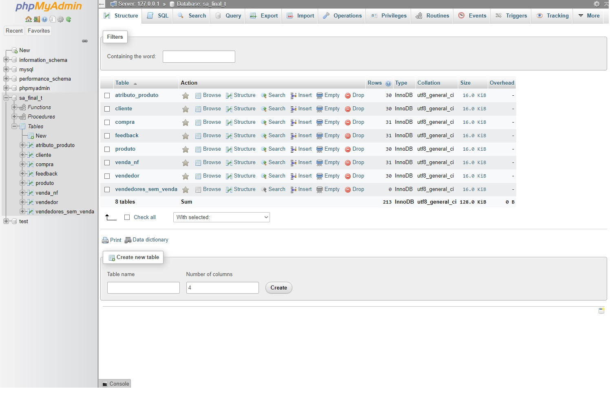

Programa desenvolvido pela equipe de estudantes do SENAI composta pelos integrantes Rafael de Carvalho, Fernanda Yasmim, Hicaro Gabriel e Marvin Aragão.
Rafael de Carvalho Nogueira Brasileiro, solteiro, CNH B, 24/09/2003 |
|
|---|---|
Estágio em desenvolvimento de sistemas full stack. Ensino médio Escola Estadual Manuel Casasanta Autônomo, trabalhando até o momento em montagem e manutenção de
computadores; instalação e reparo de softwares. Informática aplicada 105 Horas SENAI CTTI, término 2022. Trabalho voluntário Igreja Comunidade Justiça e Retidão 04/12/2019. Arrecadação e organização de doações para bazar beneficente. Trabalho muito bem em equipe, sou proativo, em tempo vago procuro sempre melhorar em minha função. |
|
|
Programa desenvolvido pela equipe de estudantes do SENAI composta pelos integrantes Rafael de Carvalho, Fernanda Yasmim, Hicaro Gabriel e Marvin Aragão. |
C++ |
||
|---|---|---|---|
| Fomos solicitados a criar um sistema que auxiliasse ao proprietário da empresa GGHARDWARE (ficticia) durante o seu cotidiano, pois, estava com dificuldade pela inexperiência com planilhas e o acúmulo de notas e documentos tornou lenta as buscas por algumas informações, sabendo que existe outros recursos, o dono percebe a necessidade de ter um sistema interno que possa sanar esses problemas. Como solução foi desenvolvido o programa ASTECH. | |||
|

|
MySQL |
||
|---|---|---|---|
|
Através da SA (Situação de Aprendizagem) proposta pelo instrutor Wellington
Pereira Santos, relativo ao 2° (segundo) módulo referente a matéria Banco de Dados (Data Base),
foi proposto à nossa equipe, como principal tarefa, produzir um
Banco de Dados para a Loja de Peças Automotivas Rubão (ficticia) para que a mesma
pudesse armazenar dados de clientes, estoque de produtos, vendas realizadas
e feedback das vendas de maneira dinâmica, independente das situações. Foi desenvolvido o Banco de Dados
em MySQL, no qual dinamizou e sanou
a demanda. |
|||
|
|
C# |
||
|---|---|---|---|
| Através da atividade pude demonstrar o dominio da manipulação das classes em C#,
as classes pode ser denominada como a base da programação Orientada a Objeto. |
|||
Redes sociais |
|
|